Showcasing my work in data analysis, visualisation, and storytelling.
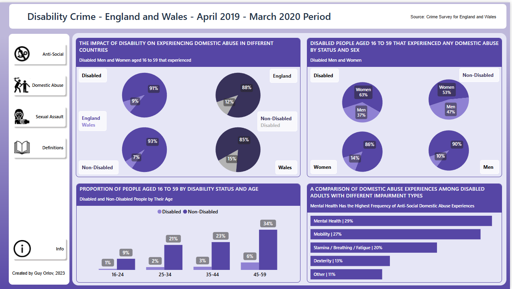
The dashboard focuses on the economic inactivity of disabled people, providing key insights for educators and training providers.
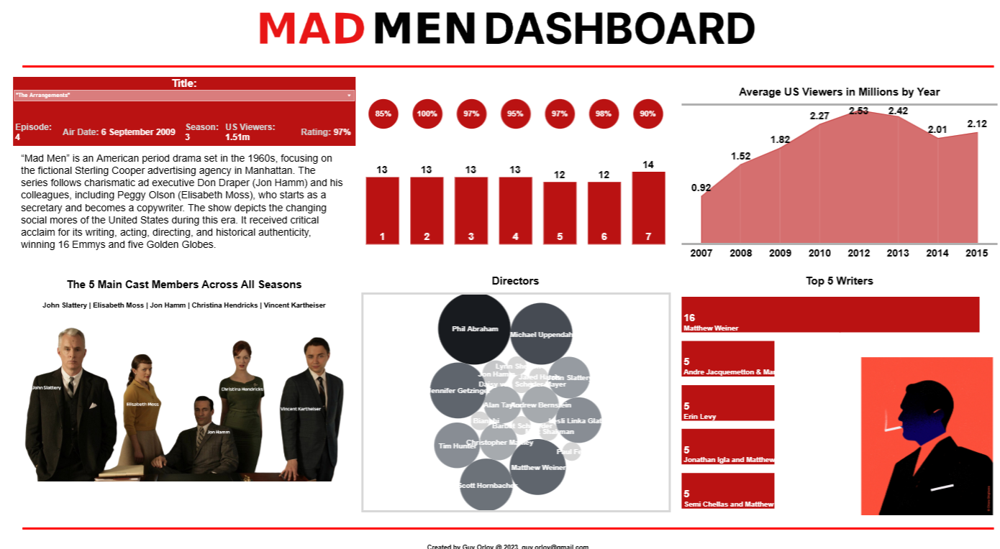
My first Tableau project, involving data cleaning, Power Query, and dashboard design with Figma.
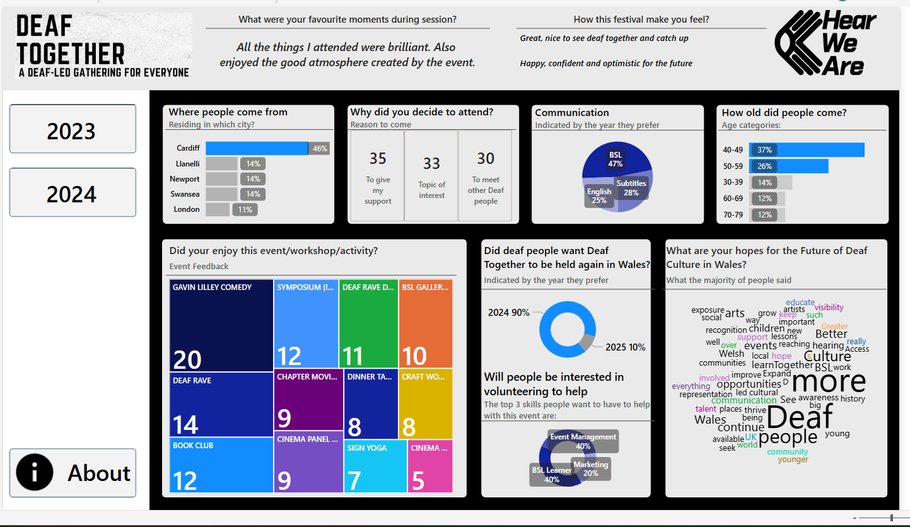
A project for Deaf Together Wales 2023 to highlight the inclusion of deaf people through events and activities.
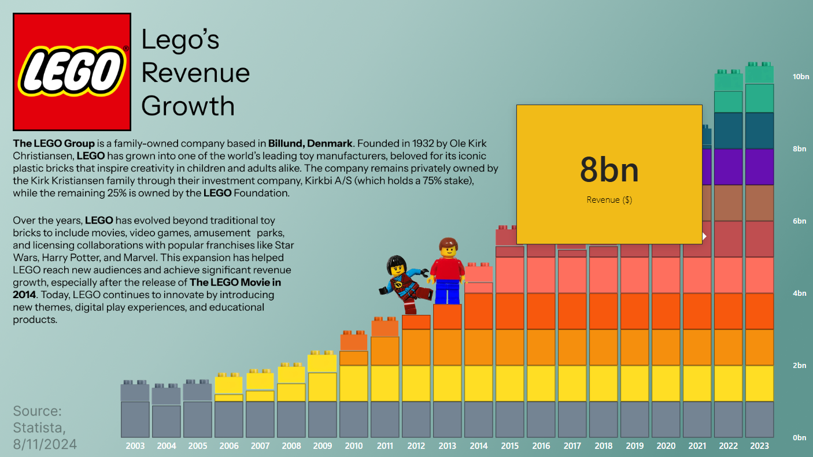
Explore an engaging Power BI dashboard showcasing LEGO's revenue data. See how LEGO made money over the years with visually compelling insights.
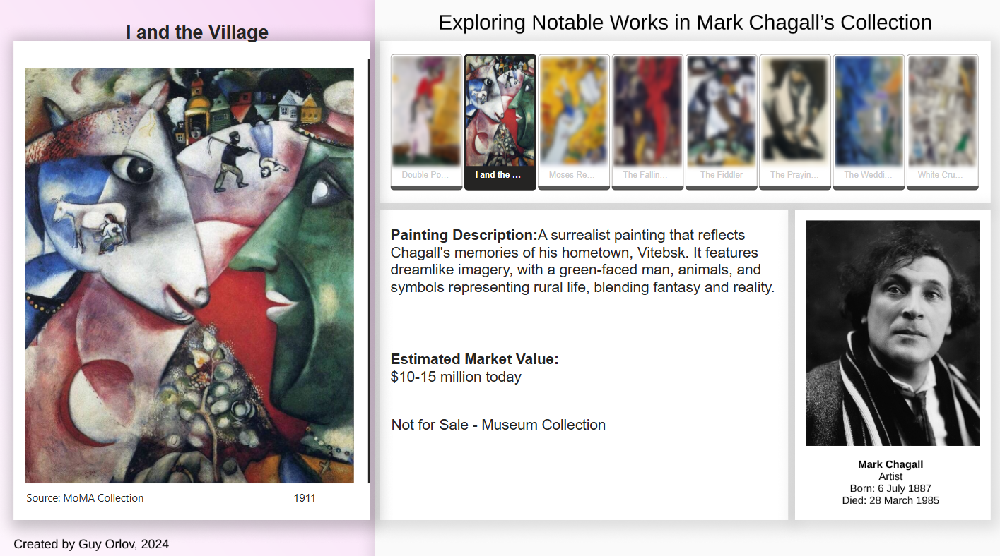
Discover a Power BI dashboard exploring notable works from Marc Chagall's collection. Dive into his artistry through engaging and interactive data visualisation.
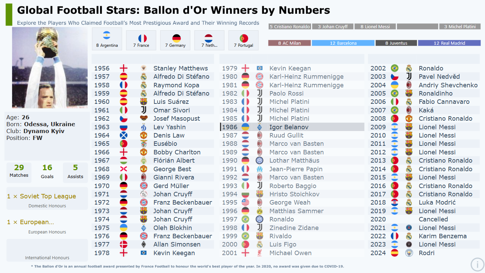
Explore a Power BI project showcasing the complete list of Ballon d'Or winners. Dive into the history of football's greatest players with engaging data insights.
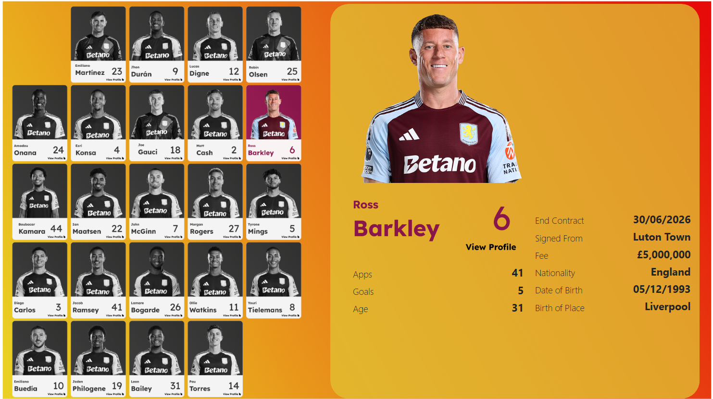
Explore detailed player profiles for Aston Villa with a focus on the 2024/2025 season. This interactive Power BI dashboard highlights key player statistics, match performance, and season trends, providing insights into the team's key contributors and their impact throughout the campaign.
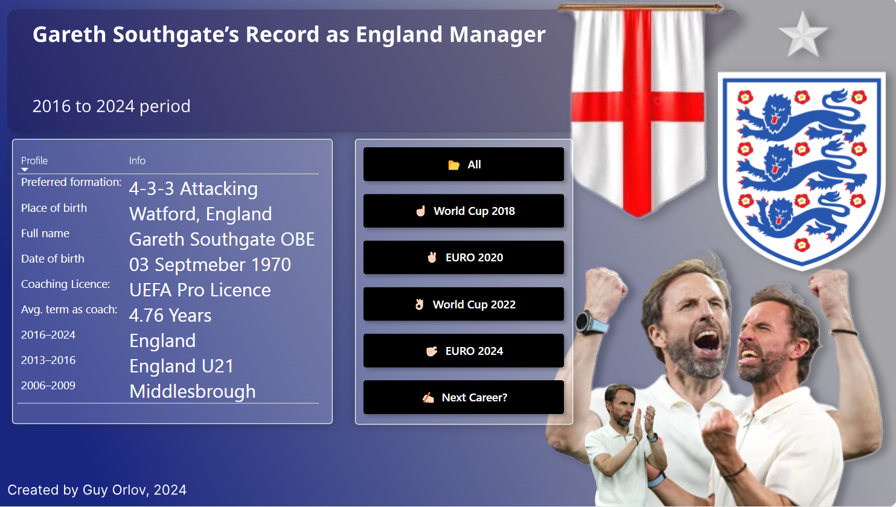
Discover Gareth Southgate's journey as England manager through an interactive Power BI dashboard. Analyse match statistics, win rates, and key milestones that define his tenure, offering engaging insights into England's performance under his leadership.
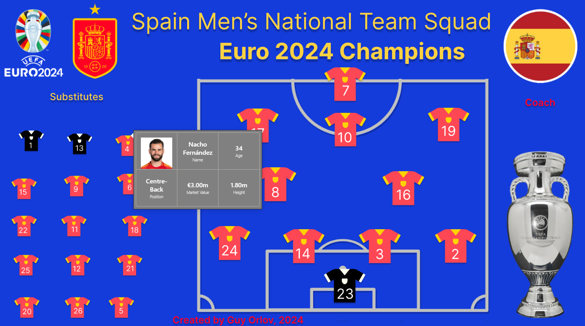
Celebrate Spain's triumph in the 2024 UEFA European Championship with this interactive Power BI dashboard. Each player profile is displayed in a detailed field tooltip, showcasing key metrics such as player valuation, role, age, and other relevant stats, offering in-depth insights into the squad's performance and contributions throughout the tournament.
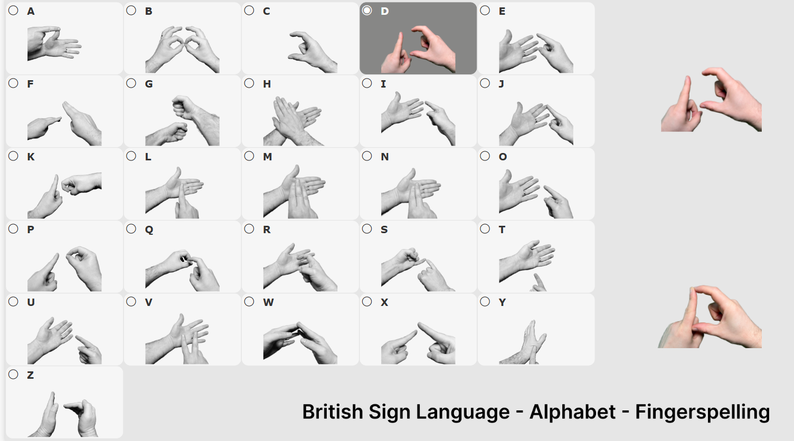
Enhance your understanding of British Sign Language (BSL) with this interactive tool that displays each letter of the alphabet in BSL. View before-and-after images to help you learn the handshapes and gestures for each letter, improving your ability to communicate in sign language effectively.
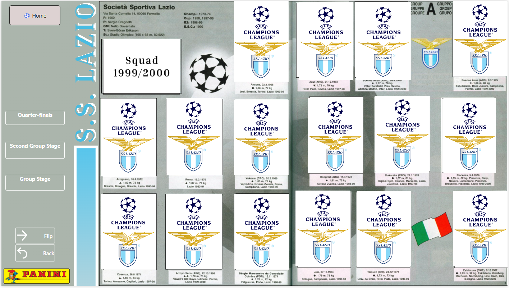
Relive Lazio SS's memorable 1999/2000 UEFA Champions League campaign with this Panini sticker-style Power BI dashboard. Explore player profiles, match highlights, and key moments from their journey, presented in a fun, collectible sticker style. The interactive design offers a nostalgic and engaging way to celebrate the team's historic season.
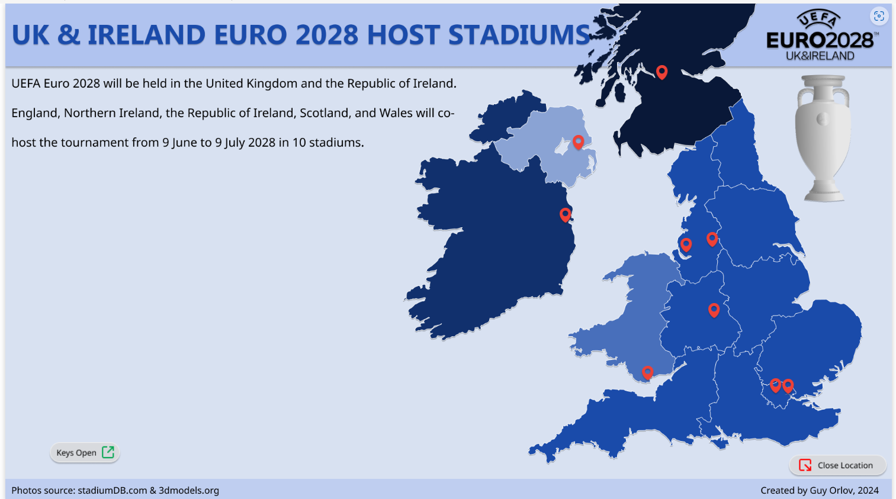
This interactive Power BI dashboard provides a comprehensive overview of the UK & Ireland's host stadiums for the Euro 2028 tournament. Featuring detailed insights on each stadium's location, capacity, and historical significance, the dashboard allows users to explore the venues through intuitive charts and maps.
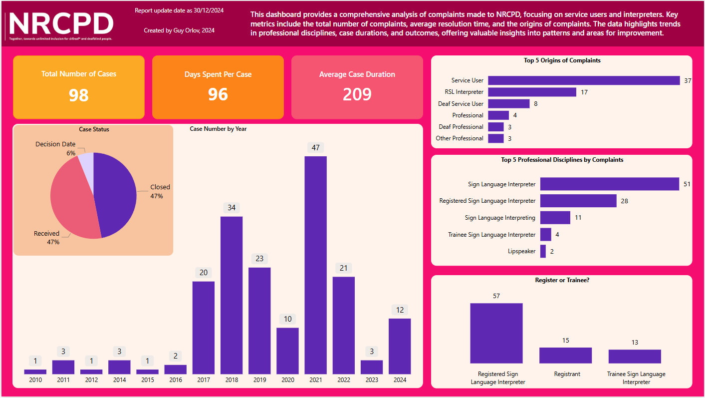
This report shows how many complaints have been made to the NRCPD and details the duration and resolution of each case.